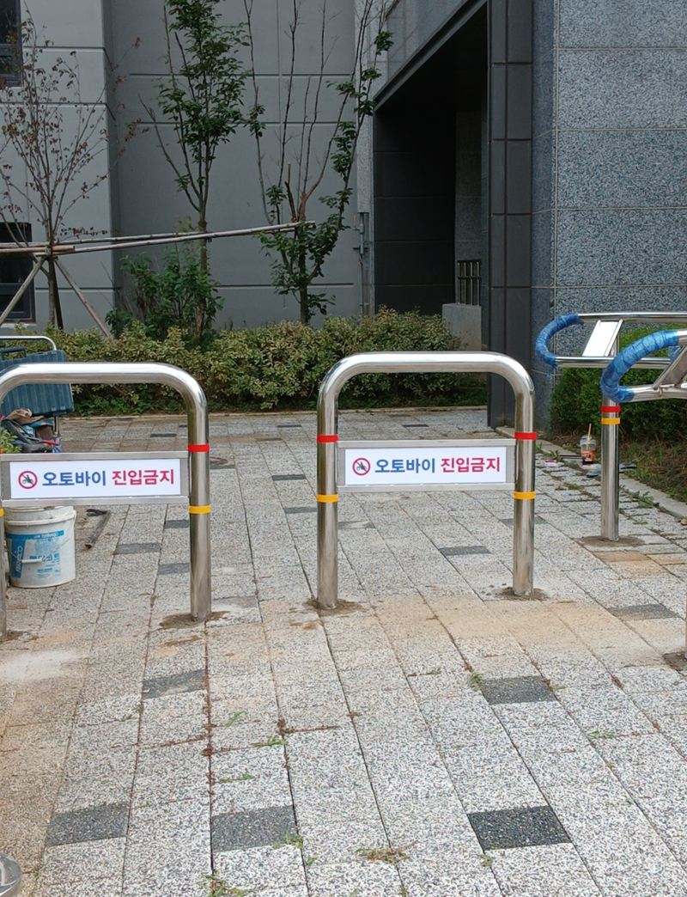
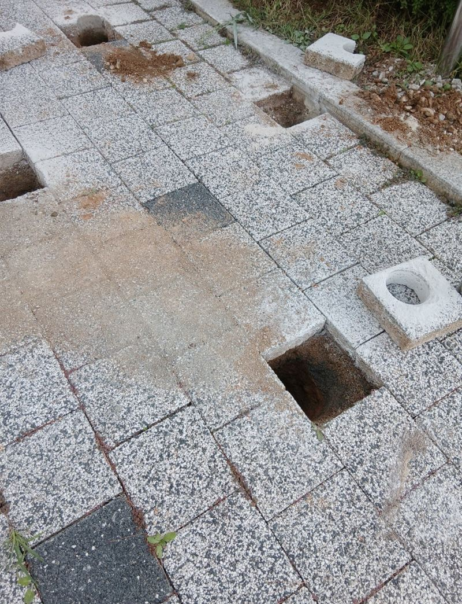
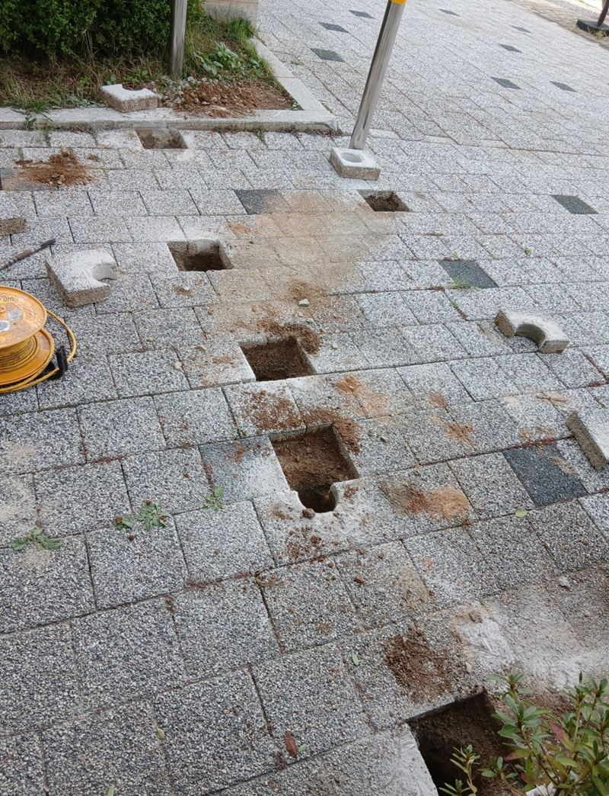
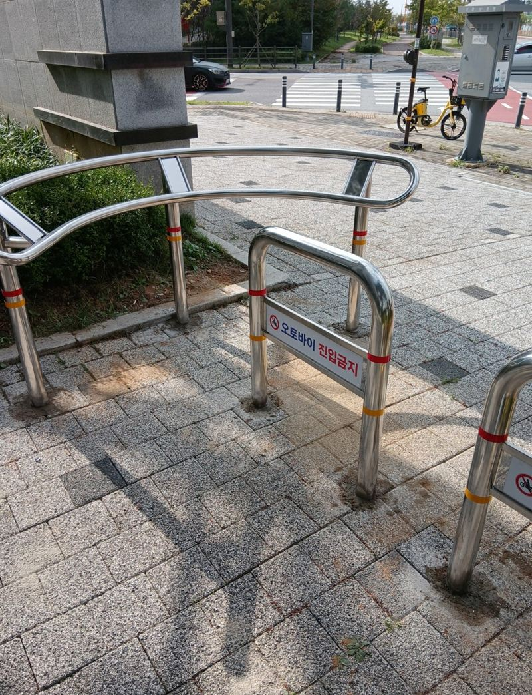
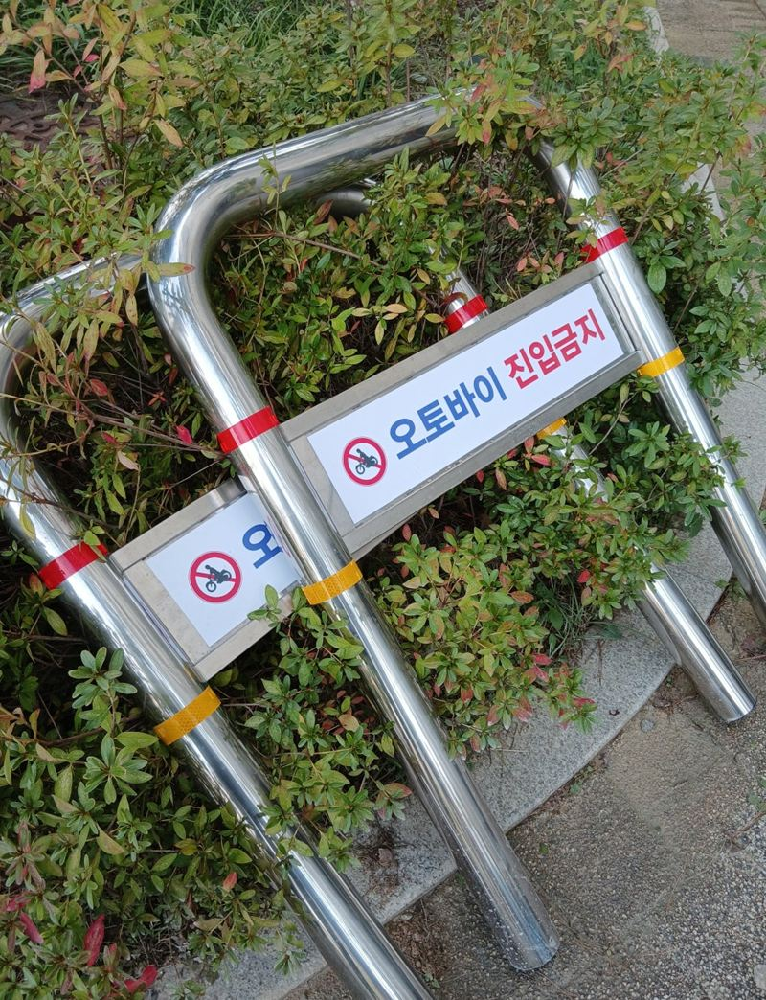
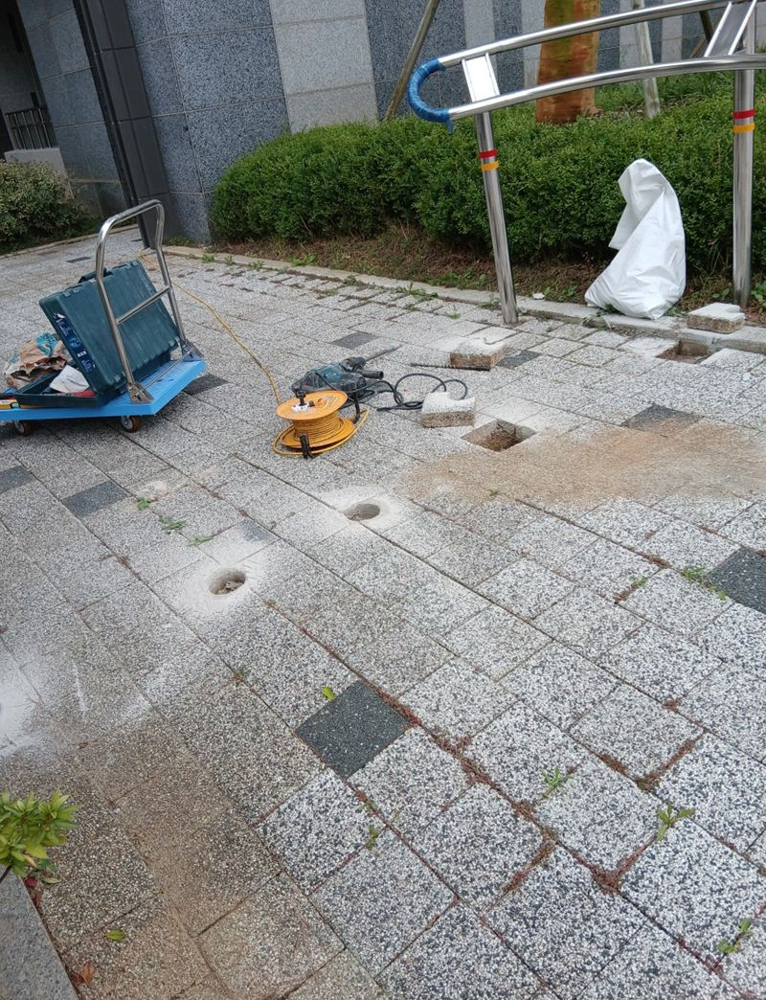
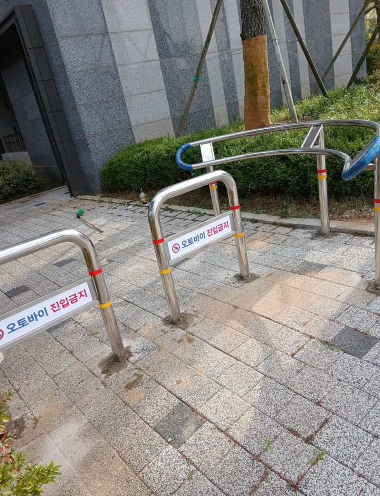

평택 보도블럭 볼라드 매립 깊이와 시공 방법


설치 전설치 후← 밀어서 전후 비교 →
"차 없는 단지인데 오토바이가 계속 보행로로 들어와요. 아이들 다니는 길이라 무서워요." 평택 고덕동의 차 없는 아파트 단지였어요. 원래 차가 다니지 않게 만든 단지인데, 외부 오토바이와 택배 오토바이가 보행로로 들어오고 있었어요. 입구엔 줄만 쳐 두어 쉽게 넘어올 수 있었어요. 보도블럭을 코어 드릴로 뚫어 아래 콘크리트까지 30cm 넘게 파고, P형·U형 볼라드를 80~90cm 간격으로 묻어 몰탈로 굳혔어요.
| 현장 | 평택 고덕동 차 없는 아파트 단지 보행로 입구 |
|---|---|
| 문제 | 외부·택배 오토바이 진입, 어린이·노약자 안전 우려 |
| 한 일 | 동선 확인·위치 선정 → 코어 드릴 천공 → 하부 콘크리트·철근 절단 → 30cm 이상 매립 → 몰탈(1:3) 고정 → 수직·높이 확인 → 틈 메움·잔재 수거 |
| 제품 | 반사띠가 있는 스테인리스 P형·U형 |
매립 깊이가 중요한 이유
볼라드가 버티는 힘은 땅 위 높이가 아니라 땅속에 들어간 길이에서 나와요. 얕게 묻으면 오토바이가 한 번 들이받거나, 사람이 매일 기대기만 해도 조금씩 기울어요. 그래서 이 현장은 최소 30cm 이상을 확보했어요. 보도블럭 아래 콘크리트층이 단단해서, 코어 드릴로 블록을 뚫은 뒤 철근 절단기와 해머 드릴을 함께 써서 깊이를 냈어요.


보도블럭 매립 순서
동선 보고 위치 정하기
오토바이가 들어오는 길과 사람이 다니는 길을 먼저 보고 기둥 자리를 표시했어요.


천공과 정리
코어로 원형 구멍을 내고, 나온 돌덩이와 잔재를 모두 걷어 냈어요.
몰탈 고정
볼라드를 넣고 시멘트와 모래를 1:3으로 섞은 몰탈을 채웠어요. 비율이 맞아야 굳은 뒤 줄어들거나 흔들리지 않아요.

수직·높이 맞추기
굳은 뒤 기둥마다 수직과 높이를 확인했어요. 높이가 같아야 밤에 반사띠가 한 줄로 보여요. 블록 사이 틈은 몰탈로 메우고 잔재를 수거했어요.

간격은 80~90cm로
너무 좁으면 유모차나 휠체어가 못 지나가고, 너무 넓으면 오토바이가 빠져나가요. 이 단지는 80~90cm로 고르게 배치했어요. 설치 후 시험해 보니 오토바이는 통과할 수 없고, 유모차와 자전거는 지나갈 수 있었어요.
| 바닥 | 달라지는 점 |
|---|---|
| 보도블럭 | 블록 아래 콘크리트 두께에 따라 천공 깊이 조절 |
| 콘크리트 | 코어 크기와 몰탈 양을 맞춤 |
| 아스팔트 | 아스콘 두께를 보고 고정 방식 선택 |
시공 후 챙기면 좋은 것
몰탈이 다 굳기 전에는 볼라드에 기대거나 짐을 걸지 않게 안내해 주세요. 처음 며칠이 고정력을 좌우해요. 또 볼라드 주변에 물이 고이면 기초가 약해질 수 있어서, 배수가 막히지 않았는지 비 온 뒤 한 번 봐 주시면 좋아요.
반사띠는 밤에 오토바이 운전자에게 볼라드 위치를 알려 주는 역할을 해요. 벗겨지거나 더러워지면 효과가 줄어드니 가끔 닦아 주세요.
같은 단지 다른 작업
이 단지에선 볼라드 말고도 주차장 보조 출입구 셔터, 화단 앞 현수막 걸이대 같은 작업을 따로 맡았어요. 단지 관리 일은 한 번에 모아 맡기시면 방문 일정을 줄일 수 있어요.
볼라드 매립 질문
P형과 U형은 어떻게 달라요?
P형은 한 기둥, U형은 두 다리를 이은 모양이에요. 막을 폭에 따라 섞어 써요.
나중에 빼낼 수 있게 할 수도 있나요?
탈착식 브라켓을 묻으면 필요할 때 빼낼 수 있어요.
보도블럭이 깨지지 않나요?
코어로 동그랗게 뚫어 주변 블록은 그대로 두고, 틈은 몰탈로 메워요.
작업 시간이 오래 걸리나요?
아래 콘크리트가 단단하면 천공에 시간이 들어요. 개수와 바닥에 따라 달라요.
택배 차는 들어와야 해요.
차가 들어올 입구는 따로 두고, 보행로만 막는 식으로 배치해요.
반사띠 색을 고를 수 있나요?
제품에 따라 색이 달라요. 단지 분위기에 맞춰 골라요.
다른 볼라드 현장
막을 입구 사진과 폭, 바닥 재질을 알려주세요.
전화 상담 010-4517-9872